Step 6 of 10
Build and deploy the app
When the infrastructure deployment succeeds, the App workflow starts on its own: it builds three images, pushes them to the private registry, waits for your approval, rolls them out to AKS and smoke-tests the public endpoint.
Transcript
Step six. When the infrastructure is ready, the app workflow starts on its own.
It builds three images and pushes them to the private registry. Then the rollout waits for approval at the production gate.
Once approved, the job rolls out the release, waits for every deployment, and smoke-tests the public endpoint.
The production environment now points to the live U R L.
In the cluster: three deployments, two replicas each, with autoscalers and disruption budgets.
Only the portal is exposed through a load balancer. Both A P Is stay internal.
The two nodes run in different availability zones of Indonesia Central.
And here is Contoso Health: three hundred and sixty members, who has paid, who is due by the tenth, and who is in arrears.
Filter on Not paid, to see members in arrears, and what they owe.
Open a member for the details: contribution, payer, months in arrears, and a year of payment history.
The second tab shows free beds per class, across twenty two hospitals.
And the same per hospital, refreshed every few minutes.
The info endpoint shows the version, which is the commit, plus the region, the cluster, and the pod that answered.
What you will do#
- Watch the App (build & deploy to AKS) workflow build and push the images.
- Approve the rollout to
production. - Open Contoso Health and see the workloads in the Azure portal.
This step ran fully automated: the GitHub API and the workflows in this repository did the work. The screenshots are public GitHub and app pages captured by the Guide evidence workflow, and the data frames show real output that the pipeline read back from Azure (read-only). The numbered instructions describe the same actions in the portal and GitHub UI.
Build and push the images#
- In Actions, a run of App (build & deploy to AKS) started automatically after the infrastructure run.
- The Build & push images job needs no approval: it signs in with the
mainbranch credential, logs in to the registry with Entra ID and pushesmembership-api,bed-apiandportal, each tagged with the commit SHA.
In the recorded run
The App workflow started on its own after the infrastructure run. Images are pushed; the rollout waits for approval.
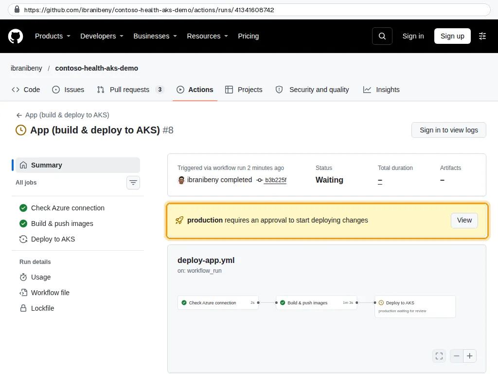
s6-01
Approve the rollout#
- The Deploy to AKS job waits for
production. Select Review deployments, tickproduction, Approve and deploy. - The job gets cluster credentials with an Entra ID token (local accounts are disabled), renders the release with Kustomize, applies it, waits for each rollout and calls the public endpoint.
- The run summary shows the URL and version. The production environment link opens the app.
In the recorded run
Approved: the job rolled out the release, waited for each Deployment and smoke-tested the public endpoint.
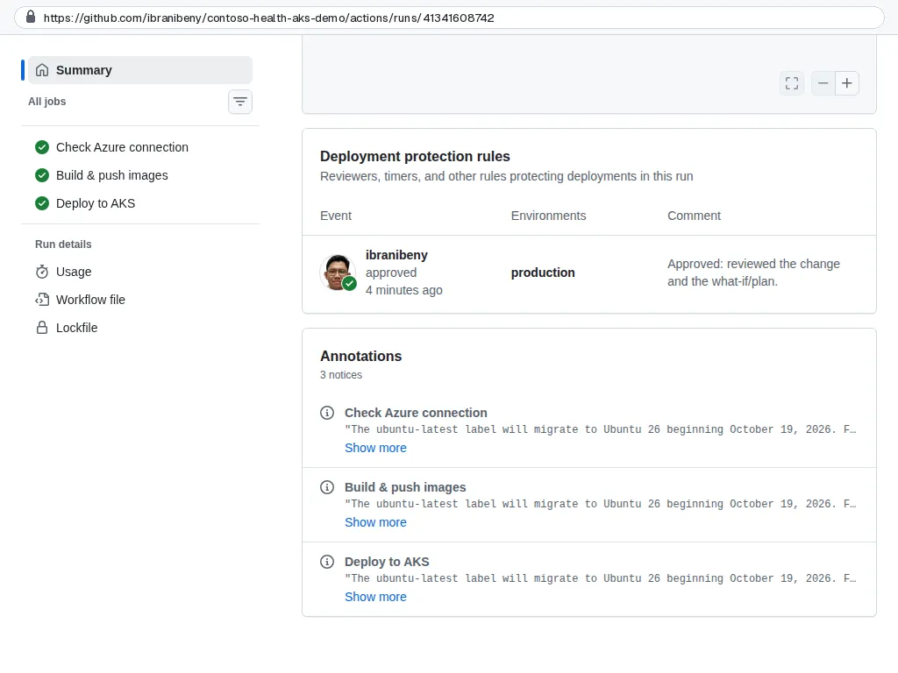
s6-02 The production environment now points to the live URL.
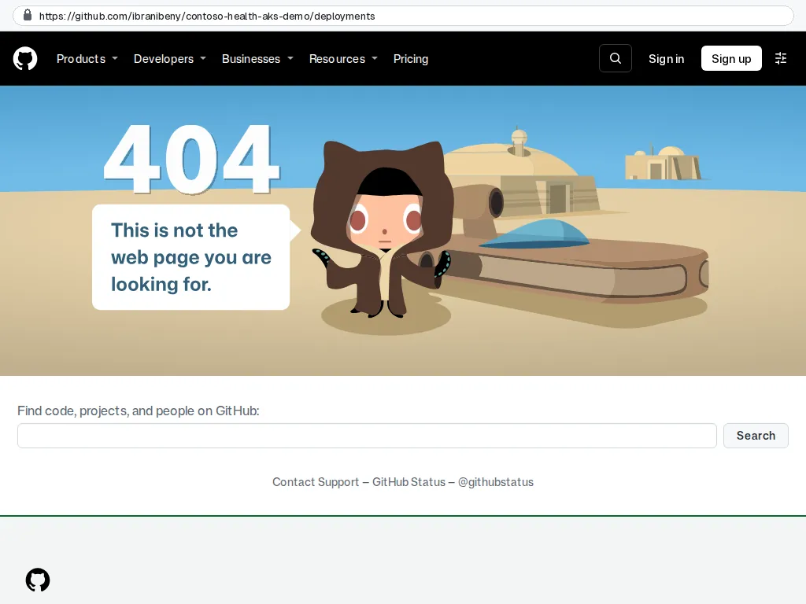
s6-03
Open Contoso Health#
- Open
http://contoso-health-<owner>.indonesiacentral.cloudapp.azure.com. - Contribution status: members, paid, due by the 10th, not paid, collection rate, outstanding arrears; payment status by segment and class; a searchable member table.
- Bed availability: available beds per class across 22 hospitals, and per hospital.
In the recorded run
Contoso Health on AKS: 360 members, who has paid, who is due by the 10th, who is in arrears.
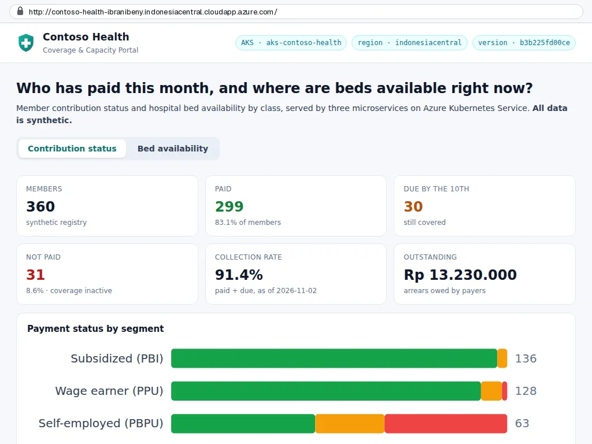
s6-07 Filter Not paid: members in arrears, with outstanding amounts.
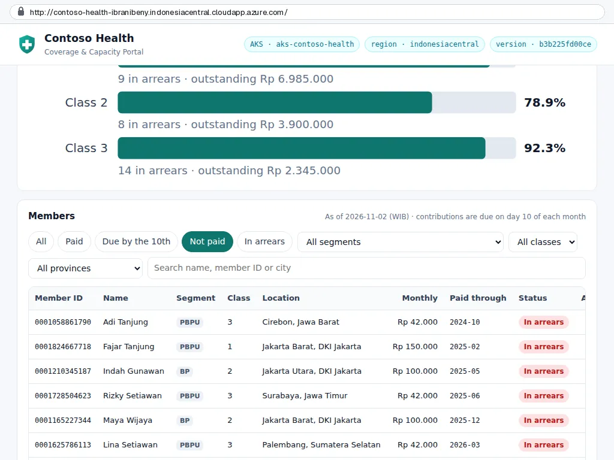
s6-08 Member detail: contribution, payer, months in arrears and the last 12 months of payments.
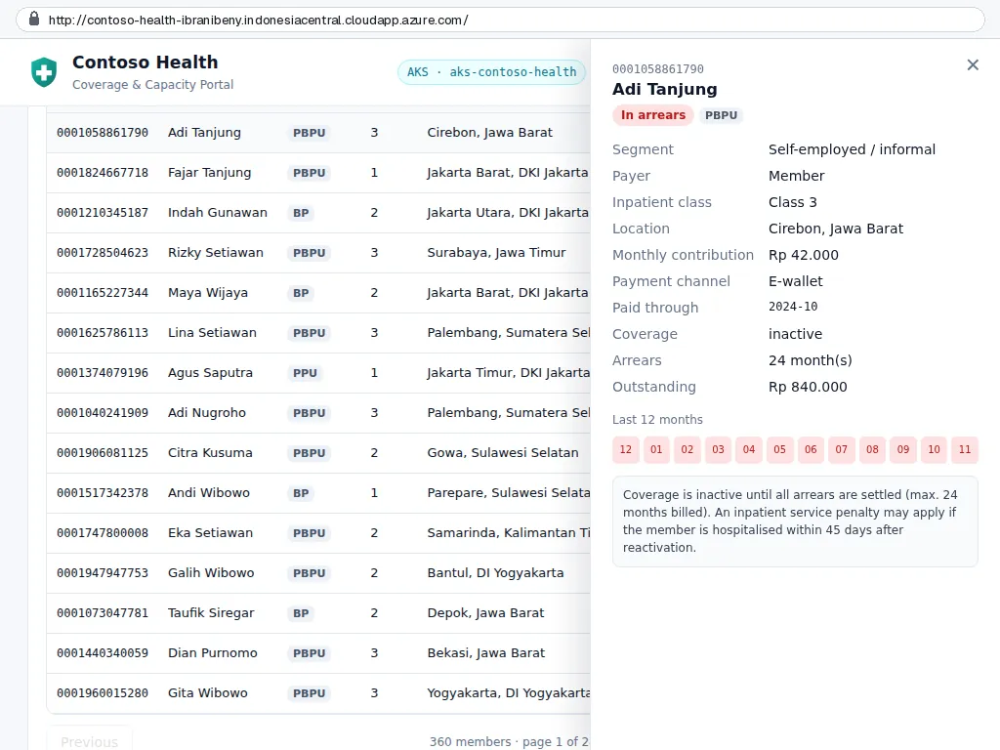
s6-09 Bed availability: free beds per class across 22 hospitals.
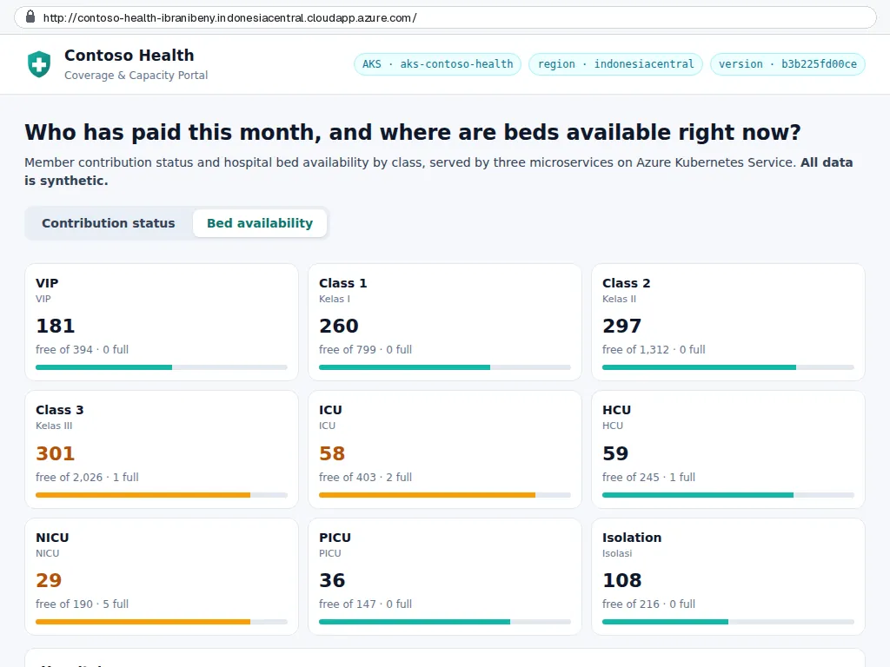
s6-10 Per hospital, per class, refreshed every few minutes.
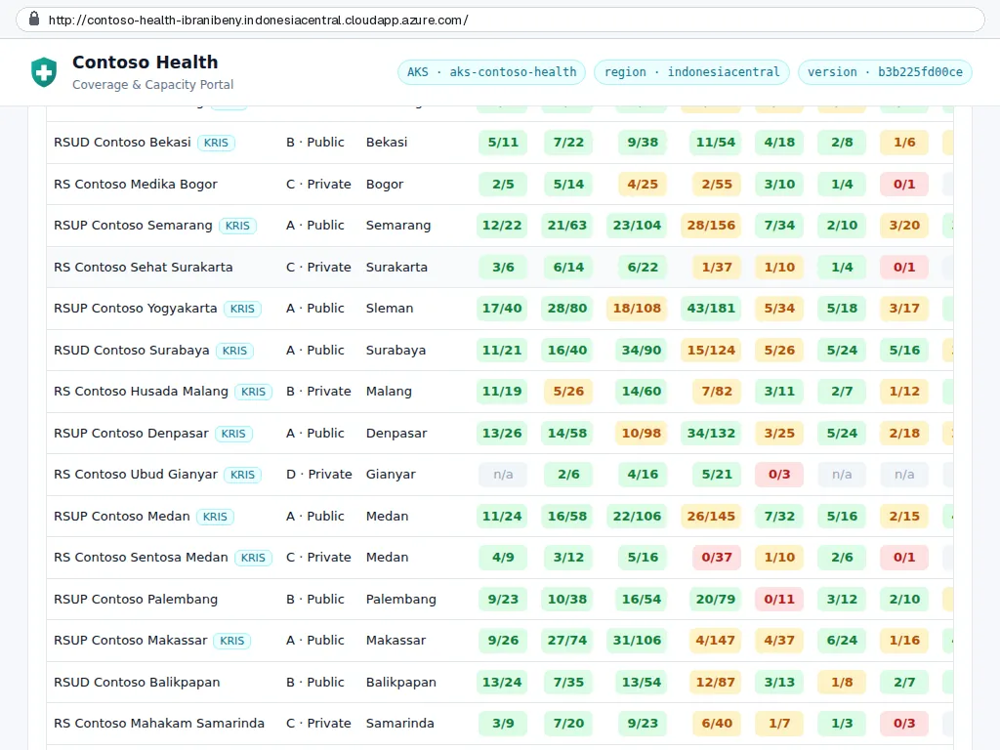
s6-11 /api/info shows the version (the commit), region, cluster and the pod that answered.
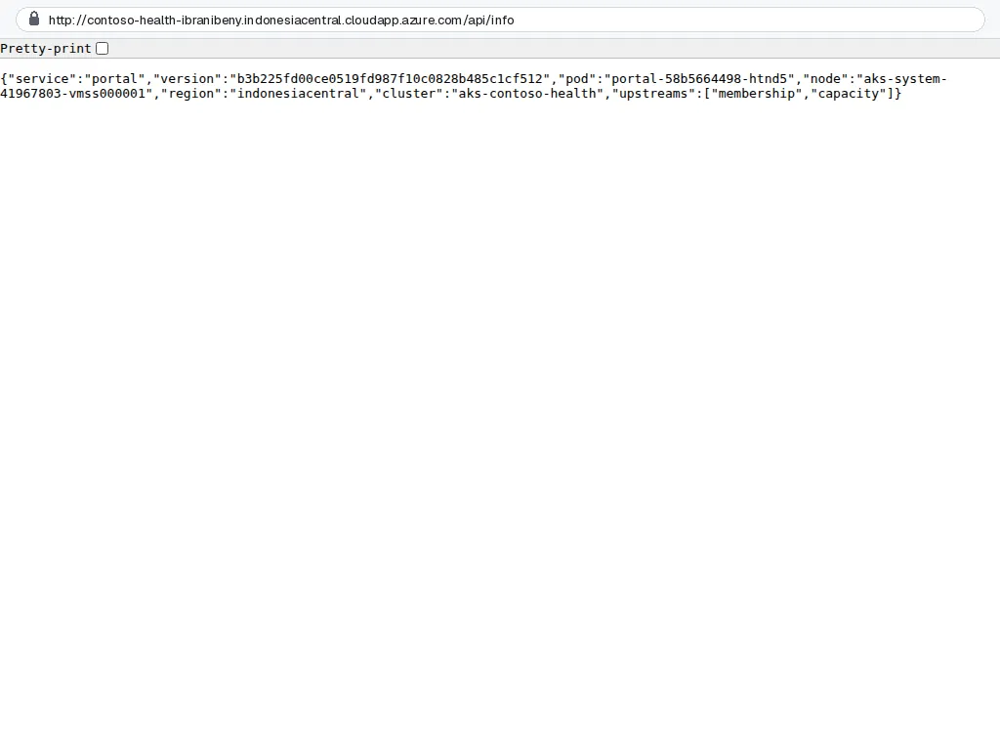
s6-12
See the workloads in the portal#
- Open the cluster
aks-contoso-health, then Kubernetes resources, Workloads. Filter the namespacecontoso-health: three Deployments, two replicas each. - Services and ingresses:
portalis the only LoadBalancer service; the APIs are internal (ClusterIP).
In the recorded run
Three Deployments with two replicas each, autoscalers on CPU and disruption budgets.
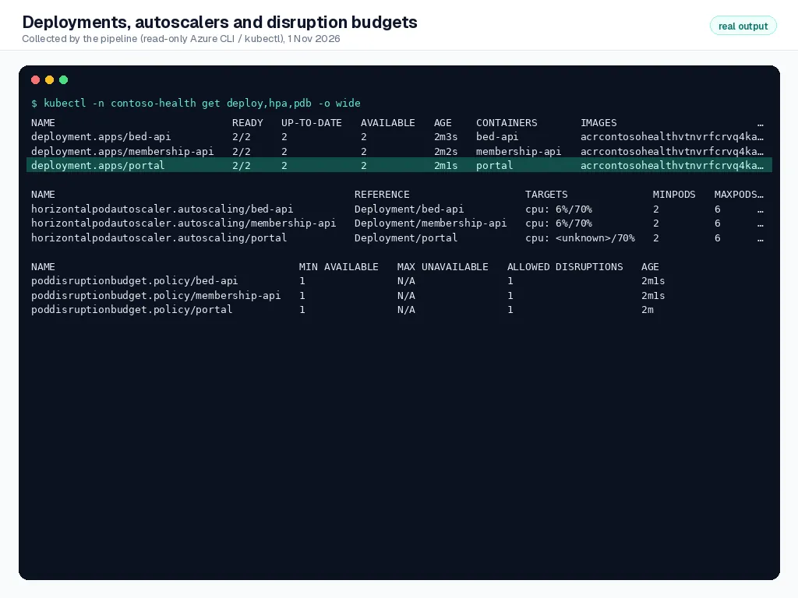
s6-04 Only the portal is a LoadBalancer service; both APIs stay internal.
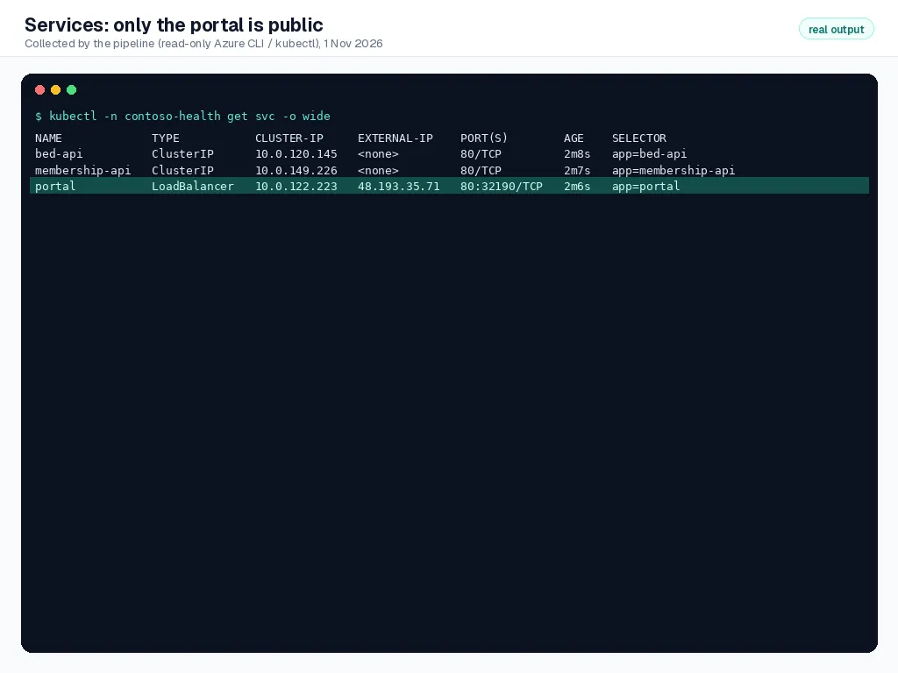
s6-05 Two nodes in different availability zones of Indonesia Central.
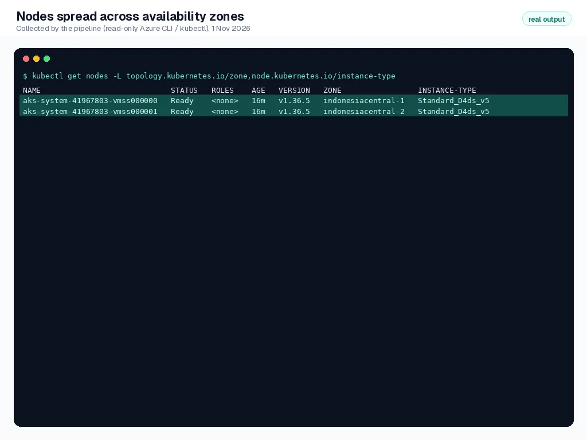
s6-06
Check your work#
- The App workflow run is green; its summary shows the URL and the image tag.
- The app loads and the header shows the cluster, region and version.
- In the portal, the three Deployments in
contoso-healthare all Ready.
How it works#
Immutable releases. Images are tagged with the commit SHA, never latest. The release manifest is rendered per run, so what runs in the cluster maps to exactly one commit, and a rollback is a revert of that commit.
No kubeconfig secrets. The cluster has local accounts disabled. The job asks Entra ID for a token for the AKS server application and uses it as the kubectl credential; Azure RBAC (AKS RBAC Cluster Admin, granted by Bicep) authorizes it.
Hardened workloads. Every pod runs as non-root with a read-only root file system, drops all Linux capabilities and uses the RuntimeDefault seccomp profile. HorizontalPodAutoscalers scale on CPU, PodDisruptionBudgets keep one replica during node drains, and NetworkPolicies deny all ingress except portal to APIs and the metrics agent.
Troubleshooting#
| Symptom | Fix |
|---|---|
| Build job ends with Registry or cluster not ready | The infrastructure run has not finished or failed. Fix it, then re-run the App workflow. |
Forbidden from kubectl | The identity lacks AKS RBAC Cluster Admin: check AZURE_PRINCIPAL_ID and re-run the infrastructure workflow. |
Pods ErrImagePull | The kubelet identity lacks AcrPull on the registry, or the image tag does not exist. Check the role assignment created by Bicep. |
| Smoke test times out | The public IP is still provisioning. Re-run the failed job; the DNS name can take a minute to resolve. |